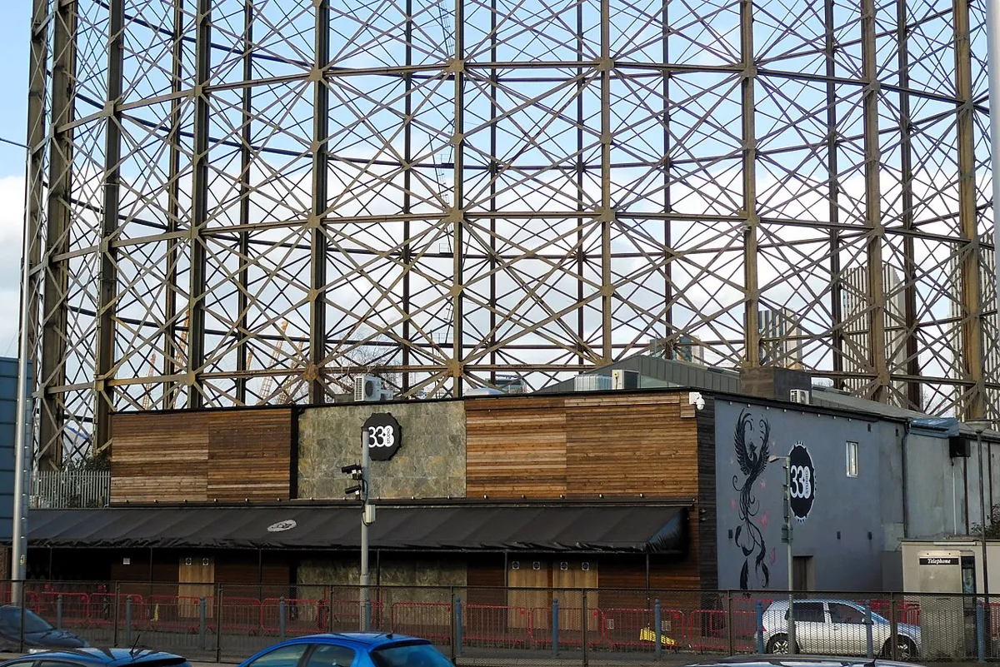
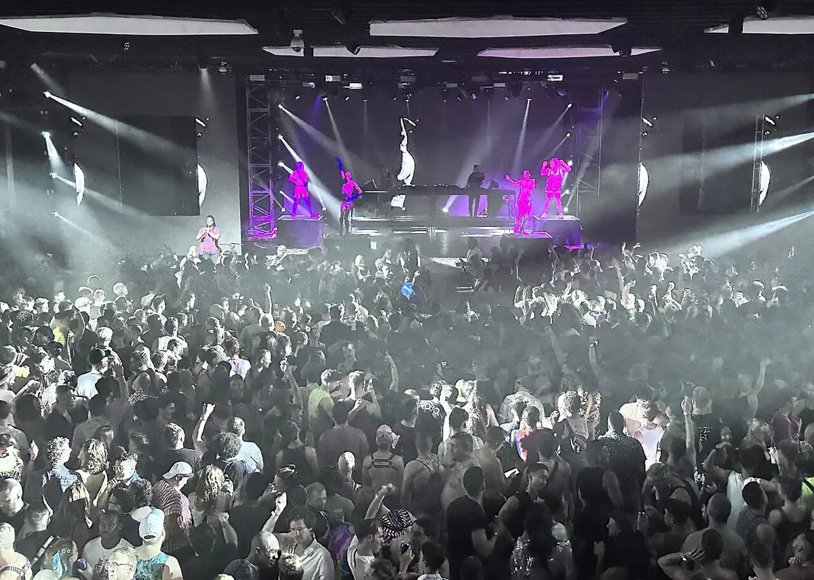
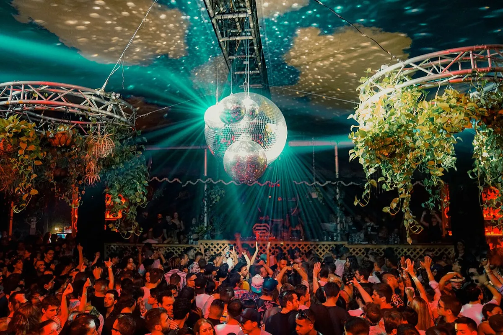
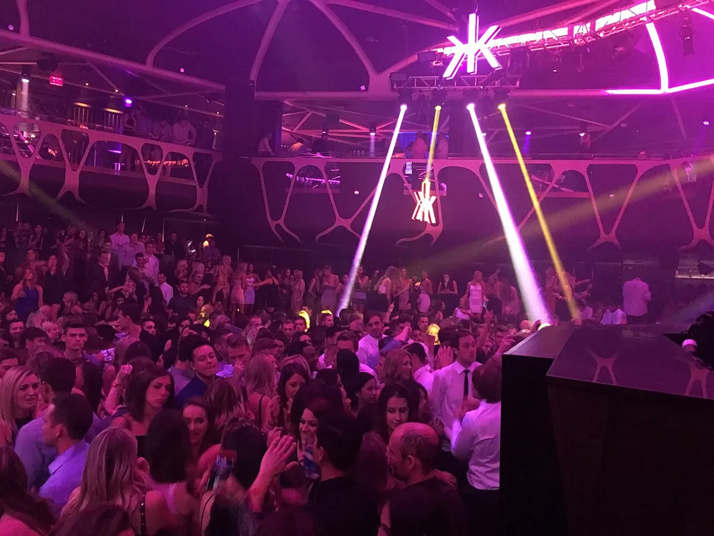

Club guide, world
Best nightclubs in the world: 20 clubs from DJ Mag's 2026 Top 100
Twenty clubs on four continents, from [UNVRS] and Berghain to GREENVALLEY, Club Space, Zouk and WOMB, with ranks, sizes and the sets to hear.
Plan your visit
Most exclusive clubs in the world
No ranking measures exclusivity, and the poll does not try. The honest answer is the club that publishes the least. Berghain publishes no dress code and no queue times, and DJ Mag lists a no-camera policy. The Berghain guide sets out what the club itself states and what it does not.
What best means for a club.
"Best" has no single meaning for a nightclub. Anyone asking for the best dance club in the world gets a vote tally, not a verdict. A list built on votes finds the clubs people travel to, and a list built on a jury of experts scores programming, safety and sustainability. Both exist, and they disagree. This guide starts from the vote because it is public, published every spring and covers every region. The shorthand, DJ Mag best clubs, means that poll.
The 20 clubs below sit in the top 46 of DJ Mag's 2026 poll, plus WOMB in Tokyo at No. 88. They are grouped by region and then sorted by size, because the same list answers a second question people type: which club is the biggest. For Europe alone, the best clubs in Europe guide goes deeper, and the magazine's other poll, for DJs, is the subject of the essay on why the DJ Mag Top 100 barely changes.
Best nightclubs in the world
The top club in the world on DJ Mag's 2026 list is [UNVRS], which is also the top nightclub in the world by that vote. The top 10 clubs in the world are [UNVRS], GREENVALLEY, Ushuaïa Ibiza, Hï Ibiza, Savaya, Echostage, Laroc Club, FABRIK, Illuzion Phuket and Surreal Park, and the same ten are the top 10 nightclubs in the world on that list. The table lists the 20 clubs with DJ Mag's 2026 rank, the city and the capacity DJ Mag's profile gives. Capacities are the poll's figures and vary by source.
| Rank | Club | City | Capacity |
|---|---|---|---|
| 1 | [UNVRS]Google MapsResident Advisor | Ibiza, Spain | 4,000 |
| 2 | GREENVALLEYGoogle MapsResident Advisor | Camboriú, Brazil | 10,000 |
| 3 | Ushuaïa IbizaGoogle MapsResident Advisor | Ibiza, Spain | 7,866 |
| 4 | Hï IbizaGoogle MapsResident Advisor | Ibiza, Spain | 5,633 |
| 5 | SavayaGoogle MapsResident Advisor | Uluwatu, Bali | 2,500 |
| 6 | EchostageGoogle MapsResident Advisor | Washington, DC | 3,000 |
| 7 | Laroc ClubGoogle MapsResident Advisor | Valinhos, Brazil | 5,000 |
| 8 | FABRIKGoogle MapsResident Advisor | Madrid region, Spain | 6,000 |
| 9 | Illuzion PhuketGoogle MapsResident Advisor | Phuket, Thailand | 5,000 |
| 10 | Surreal ParkGoogle MapsResident Advisor | Camboriú, Brazil | 20,000 |
| 11 | BootshausGoogle MapsResident Advisor | Cologne, Germany | 2,000 |
| 13 | fabricGoogle MapsResident Advisor | London, UK | Not listed |
| 14 | Club SpaceGoogle MapsResident Advisor | Miami | 1,100 |
| 17 | Zouk SingaporeGoogle MapsResident Advisor | Singapore | 2,900 |
| 20 | Studio 338Google MapsResident Advisor | London, UK | 2,400 |
| 21 | BerghainGoogle MapsResident Advisor | Berlin, Germany | 1,500 |
| 35 | D-EdgeGoogle MapsResident Advisor | São Paulo, Brazil | 1,000 |
| 44 | Academy LAGoogle MapsResident Advisor | Los Angeles | 1,000 |
| 46 | Warung Beach ClubGoogle MapsResident Advisor | Itajaí, Brazil | 2,500 |
| 88 | WOMBGoogle MapsResident Advisor | Tokyo | 1,000 |
Two caveats. DJ Mag ranks clubs on a public vote, so the top of the list favours big rooms with big fan bases, and a small club with a perfect sound system can sit far below a beach complex. And the list leaves out thousands of good clubs. DJ Mag's list of the top 100 nightclubs in the world is not the only one. The INA, the International Nightlife Association, runs a rival list, The World's 100 Best Clubs, in which a jury accounts for half the final score. Its 2026 voting is open until 2 November and the jury phase runs from 1 October to 15 November, so the 2026 list had not been published on 6 October 2026. The INA counted 646 nominated venues from 76 countries, led by Spain with 88 and the USA with 87.
Best dance clubs in the world, by region
These are the top dance clubs in the world grouped by where they are, and the best dance clubs in the world by DJ Mag's vote. The Europe section is short on purpose, because the Europe guide has the full list.
Best clubs in Europe
The European entries here are the ones that rank highest worldwide. [UNVRS] opened in Ibiza on 30 May 2025 and took first place in its first poll. DJ Mag describes a "hyperclub" for 4,000 with a dome chill-out area, and a Main Room with visuals on the side walls and ceiling, where vast windows at the back were unveiled during Michael Bibi's opening-night set.
Ushuaïa Ibiza is a beachfront club with a pool and 7,866 capacity, and DJ Mag notes a new d&b audiotechnik system. Residencies in the profile include Calvin Harris's dual residency last year, Martin Garrix's decade at the club and David Guetta's Monday night. The Ushuaïa Ibiza guide covers it.
Hï Ibiza is on Playa d'en Bossa, holds 5,633 and is run by The Night League, which also runs Ushuaïa and [UNVRS]. DJ Mag lists the Theatre, the Club Room and the Wild Corner, an L-Acoustics system and an in-club art gallery. The Ibiza clubs guide puts Hï next to Pacha, Amnesia and DC-10, and the Pacha Ibiza guide covers the oldest of them.
The catalogue has one recorded set from the club, a DJ Mag session from the Hï Garden.
FABRIK in the Madrid region is No. 8 and Bootshaus in Cologne is No. 11. fabric in London, at No. 13, is covered in the fabric guide. Studio 338 in Greenwich is No. 20, holds 2,400 and has been open over 13 years, which DJ Mag calls one of Europe's largest terrace arenas, with a mechanical roof.

Berghain is No. 21, with a listed capacity of 1,500 and a no-camera policy. DJ Mag names its rooms as the main room, Panorama Bar, Kantine, Halle, Lab.oratory, Säule and Garten. The Berghain guide has the door and the history, and the Berlin clubs guide covers the rest of the city.
Best clubs in North America
Echostage in Washington, DC is the top-ranked club in North America, at No. 6, and holds 3,000. DJ Mag describes a 2025 overhaul with seven LED walls, over 200 lighting fixtures, 16 lasers, an L-Acoustics L2 system and a 36-foot stage. Insomniac and Glow Events are named behind it.

Club Space in Miami is No. 14, at 1,100 the smallest capacity listed in the top 20. It is in its 25th year, and DJ Mag singles out closing parties of 30 hours or more around III Points, Miami Music Week and Art Basel, across the Terrace, Floyd and the Ground rooms. The venue's own channel has sets, and three of them are below.

Academy LA in Los Angeles is No. 44. DJ Mag lists a capacity of 1,000, 145 customisable LED panels in the ceiling and a Funktion-One system, with Insomniac behind it. Hakkasan in Las Vegas appears further down the 2026 list.

New York has its own guide, the best clubs in NYC, and for the big Las Vegas weekend see EDC Las Vegas.
Best clubs in South America
Five Brazilian clubs are in this guide. GREENVALLEY in Camboriú is No. 2, an open-air club for 10,000 that opened in 2007. DJ Mag says it entered the poll three years later, reached the top three the next year and has topped the list five times. Surreal Park, also in Camboriú, is No. 10 and lists 20,000 across six stages called Ritual, Bells, Raw Room, Church, Nomad and Jetset.
Laroc Club in Valinhos is No. 7. It holds 5,000, is open-air with a pool, runs 19 events a year and marked its tenth anniversary last year, with two dates given to homegrown talent. Warung Beach Club in Itajaí, No. 46, calls itself "The Temple". It opened in 2002, covers 2,000 square metres in Balinese-inspired architecture and is known for sunrise sessions.
D-Edge in São Paulo is No. 35 and has the smallest capacity of the Brazilian five, 1,000. It was born in 2003, founded by the DJ Renato Ratier, and is also a label and an agency. The catalogue has a recorded night from the club.
Best clubs in Asia
Savaya is on limestone cliffs at Uluwatu in Bali, about 100 metres above the Indian Ocean, and holds 2,500. DJ Mag says it was voted Asia's No. 1 club for the third year in a row, and lists an L-Acoustics system. It is No. 5 overall.
Illuzion Phuket is No. 9, on Bangla Road in Patong. It lists 5,000 capacity over 6,500 square metres, Funktion-One and L-Acoustics sound, and two rooms upstairs: Empire for hip-hop and Shelter for techno.
Zouk Singapore is No. 17 and has run since the early 1990s, with a capacity of 2,900. Its ZoukOut event takes place on Siloso Beach. WOMB in Tokyo is No. 88 and holds 1,000. DJ Mag marked its 25th anniversary in 2025 with Sven Väth, Richie Hawtin, Laurent Garnier and Sasha, and names the resident DJ Nobu and a mirrorball in the room. The Tokyo clubs guide covers the city, and the Asian festivals guide covers the region's outdoor side.
Biggest nightclubs in the world
The second question after "best" is "biggest". DJ Mag's capacities give a ranking of the largest nightclubs in the world on the 2026 list. Drumsheds in London (No. 45) and The Warehouse Project in Manchester (No. 15) are covered in the Europe guide.
| Club | City | Listed capacity |
|---|---|---|
| Surreal ParkGoogle MapsResident Advisor | Camboriú, Brazil | 20,000 |
| DrumshedsGoogle MapsResident Advisor | London, UK | 15,000 |
| GREENVALLEYGoogle MapsResident Advisor | Camboriú, Brazil | 10,000 |
| The Warehouse ProjectGoogle MapsResident Advisor | Manchester, UK | 10,000 |
| Ushuaïa IbizaGoogle MapsResident Advisor | Ibiza, Spain | 7,866 |
| FABRIKGoogle MapsResident Advisor | Madrid region, Spain | 6,000 |
| Hï IbizaGoogle MapsResident Advisor | Ibiza, Spain | 5,633 |
| Laroc ClubGoogle MapsResident Advisor | Valinhos, Brazil | 5,000 |
| Illuzion PhuketGoogle MapsResident Advisor | Phuket, Thailand | 5,000 |
The biggest nightclub in the world on this list is Surreal Park, and it is an unusual one: six stages in a single complex, so the figure is closer to a festival site than a room. The smallest capacity listed in DJ Mag's top 20 is Club Space at 1,100, so size and rank are only loosely related.
World famous nightclubs: the longest-running rooms
Fame in a nightclub mostly means age. These are the most famous nightclubs in the world by how long they have run, based on their opening years. World famous clubs on this list are the ones that have outlasted several scenes.
| Club | City | Open since |
|---|---|---|
| Pacha IbizaGoogle MapsResident Advisor | Ibiza, Spain | 1973 |
| AmnesiaGoogle MapsResident Advisor | Ibiza, Spain | 1976, 50th year in 2026 |
| Zouk SingaporeGoogle MapsResident Advisor | Singapore | Early 1990s |
| TresorGoogle MapsResident Advisor | Berlin, Germany | 1991 |
| Warung Beach ClubGoogle MapsResident Advisor | Itajaí, Brazil | 2002 |
| D-EdgeGoogle MapsResident Advisor | São Paulo, Brazil | 2003 |
| GREENVALLEYGoogle MapsResident Advisor | Camboriú, Brazil | 2007 |
| Club SpaceGoogle MapsResident Advisor | Miami | In its 25th year |
| Ministry of SoundGoogle MapsResident Advisor | London, UK | In its 35th year |
Best techno clubs in the world
DJ Mag's poll has no genre split, so there is no ranked answer to the best techno clubs in the world. The clubs on this page that DJ Mag or the club names as techno rooms are below. Tresor in Berlin is the older name, and the Europe guide has its story.
| Club | What marks it as a techno room |
|---|---|
| Berghain, BerlinGoogle MapsResident Advisor | Main room and Panorama Bar; the Berghain guide has the door policy |
| Illuzion PhuketGoogle MapsResident Advisor | Shelter, the upstairs techno room |
| WOMB, TokyoGoogle MapsResident Advisor | 25th anniversary in 2025 with Sven Väth, Richie Hawtin, Laurent Garnier and Sasha |
Best nightclubs in the world FAQ.
What is the best nightclub in the world?
[UNVRS] in Ibiza, at No. 1 in DJ Mag's Top 100 Clubs 2026. It opened on 30 May 2025 and was new to the list. Asked as the best night club in the world, the question gets the same answer.
What are the best clubs in the world?
By DJ Mag's 2026 vote, the top five are [UNVRS] in Ibiza, GREENVALLEY in Camboriú, Ushuaïa Ibiza, Hï Ibiza and Savaya in Bali. The table above lists 20 clubs by rank.
What are the best clubs worldwide outside Europe?
GREENVALLEY in Brazil is second overall, Savaya in Bali is fifth and Echostage in Washington, DC is sixth, as the top-ranked club in North America.
What is the biggest nightclub in the world?
Surreal Park in Camboriú, Brazil, at a listed 20,000 capacity in DJ Mag's 2026 profile. It has six stages, which makes it the biggest night club in the world on that list.
What are the best techno clubs in the world?
DJ Mag has no techno category. Berghain, Illuzion Phuket's Shelter room and WOMB are the techno names on this page, and the techno section gives the reasons.
Is there an official top 100 clubs in the world list?
There are two. DJ Mag's Top 100 Clubs is a public vote published each spring. The INA's The World's 100 Best Clubs combines a public vote with a jury that accounts for 50% of the score, and its 2026 list had not been published on 6 October 2026.
Sources.
- Ranks, capacities, openings and club profiles: DJ Mag Top 100 Clubs (2026 list and the profile page of each club) and the DJ Mag 2026 results article.
- The World's 100 Best Clubs: International Nightlife Association, voting and jury dates and nomination counts.
- Facts on Drumsheds, The Warehouse Project, Bootshaus, Pacha, Amnesia, Tresor and Ministry of Sound come from the sources listed in the best clubs in Europe guide.
Continue reading
Read next.
 Rave spots~8 min read
Rave spots~8 min readBerghain: Panorama Bar, Sound and Residents
Berghain explained: the former power station, Panorama Bar upstairs, Halle am Berghain, the Kantine, and the Ostgut Ton label.
Read article → Rave spots~11 min read
Rave spots~11 min readBest Clubs in NYC: Nightclubs for House and Techno, Then and Now
Nowadays, Basement, Public Records, Good Room and Elsewhere: the best clubs in NYC for house and techno now, and the history from the Loft to Output.
Read article → Rave spots~7 min read
Rave spots~7 min readBest Clubs in Tokyo: WOMB, Contact and the Ban on Dancing
WOMB, Contact, Vent and Circus Tokyo: the best clubs in Tokyo for house, techno and bass music, and the 68-year law against dancing that shaped them.
Read article → Rave spots~6 min read
Rave spots~6 min readBest Clubs in Budapest: A38, Instant-Fogas and Turbina
A38's converted cargo ship, the seven rooms of Instant-Fogas and Turbina's techno nights: the best clubs in Budapest now, and the ruin bars several grew out of.
Read article →